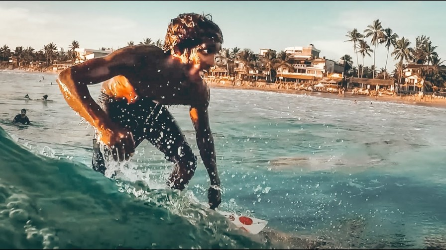
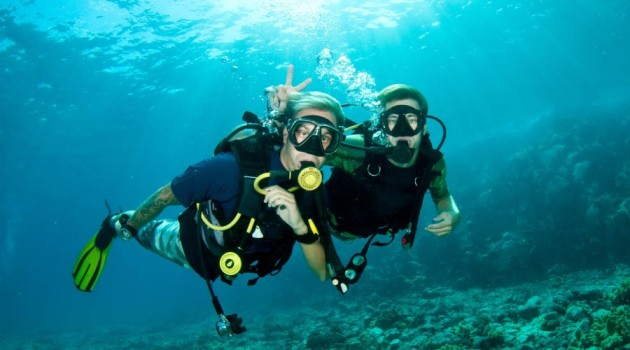
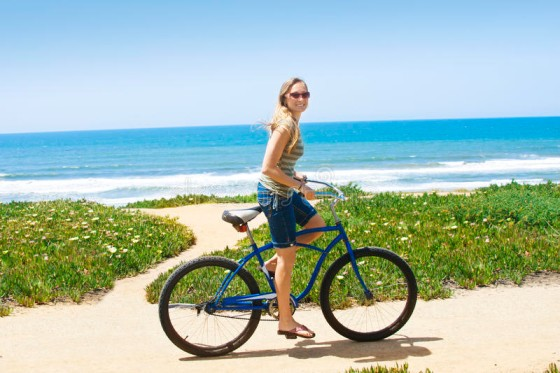

Initially started as a community project to help protect the biodiversity of the southern coast, The Hikkaduwa Turtle Hatchery, is now a fully-fledged hatchery and rescue center with dedicated teams that work round the clock to study, care, and protect several turtle species.
Situated a few kilometers north of the main Hikkaduwa town lies the Sea Turtle Hatchery and Rescue Centre. Our mission is to conserve some of the endangered species of turtles in the world. It is just one of many turtle hatcheries in the southern coast of the island.
Presently, there are five species of turtles that are taken care of in the hatchery and rescue center. Such species are the Olive Ridley Turtle, Leatherback Turtle, Loggerhead Turtle, Hawksbill Turtle, and Green Turtle. The facilities of the sea turtle hatchery and rescue center are all state-of-the-art, complete with water tanks to care for newborn turtles, along with adult turtle species that have been rescued from the sea due to injuries. One of the more peculiar sights in the center is the area in which the turtles lay their eggs, as they have distinct little mounds of sand piled neatly betweent one another. Each of these mounds is monitored closely to calculate the hatching process of the turtle eggs.
You can do following things and have fun as a nature lover when you visit Hikkaduwa Turtle hatchery,
Surfing is one of the most popular things to engage in Hikkaduwa, with a clear warm water base and waves as high as 11 ft. With a high-performance wave and an A-frame peak which has a considerable line running through to the shore, with a left break into a channel with the choicest mix of sand and reef, the main reef at Hikkaduwa is mostly crowded in favorable conditions. Approx. 200 m south of the main reef is Benny’s which favors the left and is must faster and hollower than the main reef.
Hikkaduwa’s magnificent coral reef and abundant ecosystem underwater make it a popular choice for snorkeling and scuba diving excursions in Sri Lanka, with over 60 species of hard coral and about 170 kinds of tropical reef fish in the Hikkaduwa National Park’s fringing bank. These excursions give the visitors an opportunity to explore several shipwrecks as well, some of which remain well-maintained, lying at varying depths of the ocean. The best time to explore snorkeling and scuba at Hikkaduwa is between November and April when the sea is calm and conditions opportune for some mesmericunderwater photography.
A backpacker’s ideal destination, Hikkaduwa is perfect to rent a bicycle and peddle around, strolling at a leisurely pace and enjoying the quaint town with the wonderful breeze! And whilst you’re at it, include a few sights to see like the Tsunami Education Centre and Museum that not only educates about Tsunami but also has on display pictures of the 2004 disaster; or enjoy riding amidst the tea zones in the city to relish and choose the different types of teas suiting your tastey.
When you’re exhausted after enjoying the water sports or sightseeing, Hikkaduwa has the perfect option for you to relax without a care in the world with its wondrous & signature Sri Lankan ayurvedic spa treatments & massages to rejuvenate & refresh your body, mind & soul.
The top sightseeing places in Hikkaduwa are Hikkaduwa National Park, Hikkaduwa Lake, Akurala Beach, Hikkaduwa Beach, Narigama Beach, Pitiwella Beach. You can have so much fun sightseeing these places and you can spend a whole day sightseeing these beautiful places in the island.


.png)